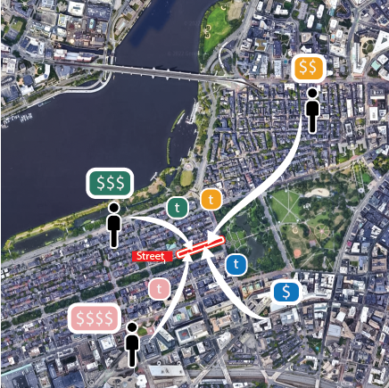

Why it matters?
“We shape our buildings; thereafter they shape us.” Diversity is intrinsic to a sustainable, resilient, and inclusive city. The probability of meeting diverse groups of others also shape our own path self-development. Cities have learned to build mixed-income housing to encourage people with different socioeconomic status to meet each other. However, so far we have not leverage any specific planning tools to encourage a diverse experience through our daily life. In view of this gap, our research team focus on a very unique spatial unit, the urban street sidewalk, to construct a Experienced Social Mixing (ESM) index to understand the likelihood of us meeting people with different income backgrounds.
Construct the ESM
Our measure of ESM is constructed from a privacy-enhanced mobility dataset provided by Cuebiq, which includes 3-month long records across two years of anonymized device-level location pings for 0.5 million users. To construct the ESM, we pre-process the data to identify each device's home Census Block Group (CBG) and stay locations using the same method in a previous work by Moro et al.(2020). We first associate each device from the mobility dataset with an approximate socioeconomic status by their inferred home CBG. Each individual's home CBG is obtained from their most commonly visited location between 10 pm to 6 am. Then all individuals are grouped into four quantiles of income groups according to their home CBG's median household income's relation to the metropolitan area distribution of median household income. We then extract visits an individual made to a given street segment for at least 5 minutes but a maximum of two hours. This is to prioritize sidewalk activities that have the potential for meaningful interaction among pedestrians. Activities such as visiting cafes, restaurants, parks, or simply resting along the streets are emphasized.
Acknowledgement
We would like to thank Cuebiq who kindly provided us with the mobility data set for this research through their Data for Good program.